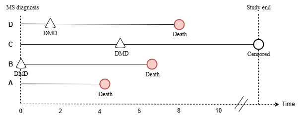

Extensions in Survival and Longitudinal Analyses
Time-to-event outcome
There are two components to a time-to-event (survival) outcome: (1) whether an event occurs and (2) the timing of the event.
- Example: time-to-CVD, where we are interested both in CVD (cardiovascular disease) status and time from cohort entry to CVD development. The Cox proportional hazards (PH) model is widely used for modeling a time-to-event outcome.
Acknowledgment: Md Belal Hossain contributed to drafting this chapter; some of the ideas presented here stem from his PhD thesis and subsequent publications.
Time-to-event outcome
- Bross formula requires the exposure, outcome, and proxy covariates to be binary
- Ignoring the time aspect in a time-to-event outcome leads to a loss of information, which can significantly impact the selection of the proxy covariates and can impact the effect estimate of interest
- ML survival models could be useful in prioritizing and selecting recurrence covariates
Time-dependent exposure
Unlike a time-fixed exposure, whose values are known at study entry (time zero), values for a time-dependent exposure can change over the course of follow-up. Consider an example of a multiple sclerosis (MS) cohort, where we are interested in the relationship between disease-modifying drugs (DMDs) and long-term mortality. Not every patient is exposed to DMDs at their MS diagnosis. Instead, some patients are never exposed to DMDs, some may be exposed to DMDs at the time of their MS diagnosis, while others may be exposed many years later. In this case, the exposure status of patients is not fixed at time zero, but rather depends on time. Simultaneously dealing with time-dependent exposure and residual confounding bias can be challenging.
Time-dependent exposure
- Immortal time bias occurs when a period during follow-up, in which a patient cannot experience the outcome (e.g., death), is misclassified as time under observation, often leading to an overestimation of the treatment’s effectiveness
- In the MS example, immortal time can occur if patients must survive long enough to receive a DMD, which could falsely enhance the perceived survival benefit of these drugs
- Employing Cox proportional hazards models with time-varying exposure to DMDs can help mitigate immortal time bias. However, this time-dependent Cox regression cannot deal with residual confounding bias.
High-dimensional disease risk score (hdDRS)
The hdPS technique might not reduce significant bias due to an overfitted exposure model, particularly with a rare exposure. An alternative confounding adjustment method to hdPS is hdDRS. In contrast, hdPS separates the exposure modelling from the outcome modelling, ultimately giving the end-user more flexibility in adjusting for confounding effects (e.g., via inverse-probability-weighting). On the other hand, the hdDRS achieves the balancing of the confounders by modelling the outcome.
High-dimensional disease risk score
- hdDRS can be an alternative to hdPS for dealing with residual confounding bias
- hdDRS could be particularly helpful in situations where the exposure is rare or the outcome is a repeated measure